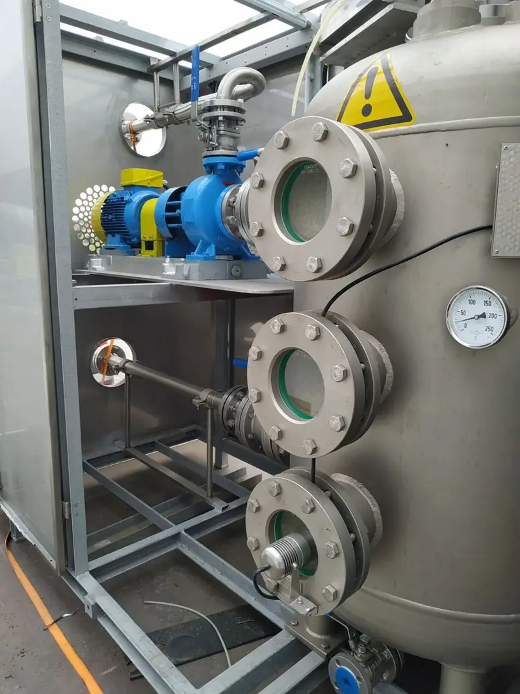
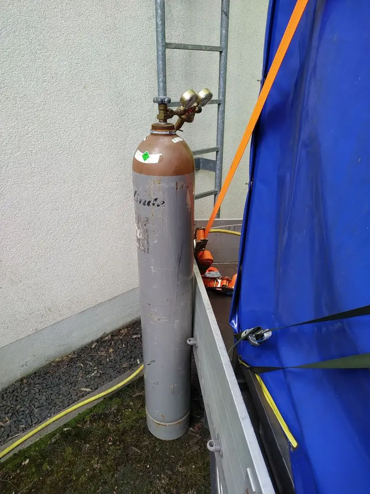

Das Problem: Verluste, die keiner hört
Im Trinkwassernetz fällt ein Leck meist erst in der Wasserbilanz auf. Die klassische Suche läuft über Geräusche: Bodenmikrofon, Korrelator, Geräuschlogger. Das funktioniert gut bei Metallleitungen und ruhiger Umgebung. Bei Kunststoffleitungen, großen Nennweiten, tiefer Verlegung oder lauten Straßen trägt das Geräusch aber nicht weit genug, und die Suche endet ohne Befund.
Dann bleibt oft nur Suchschachtung auf Verdacht. Das ist teuer, dauert und trifft selten beim ersten Mal.
Die Lösung: Helium im Wasser gelöst
Wir bringen Helium über eine Spezialanlage blasenfrei gelöst ins Netzwasser ein. Es fließt mit dem Wasser mit. Solange die Leitung dicht ist, bleibt es gelöst. Erst dort, wo Wasser austritt und der Druck abfällt, wird das Helium frei, steigt durch den Boden auf und wird an der Oberfläche gemessen. Das funktioniert unabhängig vom Rohrmaterial und von Umgebungsgeräuschen.
Der natürliche Heliumgehalt der Luft liegt bei rund 5,2 ppm. Jede deutliche Erhöhung darüber ist ein Hinweis auf eine Leckstelle, den wir entlang der Trasse systematisch eingrenzen.
Hygiene und Zulassung
- Helium ist beim Umweltbundesamt in der Liste nach § 20 TrinkwV als Stoff zur Ortung von Leckagen im Rohrsystem geführt.
- Helium ist chemisch inert, ungiftig, geruch- und geschmacklos.
- Die Beladeanlage wird vor jedem Trinkwassereinsatz gereinigt und desinfiziert.
- Sie bekommen von uns die Unterlagen für Ihre interne Freigabe und die Abstimmung mit dem Gesundheitsamt.
Ablauf für Wasserversorger
- Erstgespräch und Unterlagen. Netzabschnitt, Leitungsmaterial, Nennweiten, Druck, bekannter Verlust und vorhandene Bestandspläne.
- Einspeisestelle festlegen. Zum Beispiel ein Hydrant oder ein Spülanschluss. Die Versorgung läuft weiter.
- Helium blasenfrei lösen. Die gereinigte und desinfizierte Anlage bringt das Helium gelöst ein. Die Verteilungszeit hängt vom Netz ab.
- Messung entlang der Trasse. Bodenluft an Prüföffnungen, Schächten und Straßenkappen prüfen, alle Werte protokollieren.
- Auswertung und Bericht. Messwerte, Trassenprotokoll, Eingrenzung der Schadstelle und Empfehlung für die Reparatur.
Geeignet für
- Transport- und Verteilleitungen, auch aus Kunststoff
- Abschnitte mit auffälligem Verlust in der Wasserbilanz
- Leitungen unter Verkehrsflächen, wo Geräuschortung gestört wird
- Tief verlegte Leitungen und große Nennweiten
- Werks- und Liegenschaftsnetze mit eigener Trinkwasserversorgung
- Netze, in denen die akustische Ortung ohne Befund geblieben ist
Das Verfahren ist in Trinkwassernetzen erprobt, unter anderem bei einem Großstadt-Wasserversorger, bei Stadtwerken in Norddeutschland und in Werksnetzen der Chemieindustrie. Die Referenzliste im Detail erhalten Sie auf Anfrage.
Was den Aufwand und die Kosten bestimmt
Einen Listenpreis gibt es nicht, weil jedes Netz anders ist. Diese Punkte entscheiden über den Aufwand:
Mit den Eckdaten Ihres Netzes bekommen Sie ein kostenloses, unverbindliches Angebot. Den Anfragebogen als PDF können Sie direkt ausfüllen.
Häufige Fragen zur Trinkwasser-Leckortung
Darf Helium im Trinkwassernetz eingesetzt werden?
Helium ist beim Umweltbundesamt in der Liste nach § 20 TrinkwV als Stoff zur Ortung von Leckagen im Rohrsystem geführt. Die Freigabe im Einzelfall und die Abstimmung mit dem Gesundheitsamt liegen beim Betreiber; die nötigen Unterlagen erhalten Sie von uns.
Verändert Helium das Trinkwasser?
Helium ist chemisch inert, ungiftig, geruch- und geschmacklos. Es reagiert nicht mit dem Wasser oder dem Rohrmaterial und gast nach der Messung wieder aus.
Muss das Netz außer Betrieb genommen werden?
Nein. Das Helium wird im laufenden Betrieb blasenfrei im Wasser gelöst. Die Versorgung läuft weiter, es gibt keine Entleerung und keine Absperrung ganzer Abschnitte.
Wie genau lässt sich die Leckstelle eingrenzen?
Durch die hochsensible Analytik und die systematische Messung entlang der Trasse lässt sich die Schadstelle in der Regel auf wenige Meter eingrenzen. Die Genauigkeit hängt von Bodenaufbau, Leitungstiefe und Dichte der Prüföffnungen ab.
Was kostet eine Helium-Leckortung im Trinkwassernetz?
Das hängt von Netzvolumen, Trassenlänge, Zahl der Prüföffnungen, Einsatztagen und Anfahrt ab. Mit den Eckdaten Ihres Netzes erhalten Sie ein kostenloses, unverbindliches Angebot.
Wasserverlust im Netz, Quelle unbekannt?
Schicken Sie uns die Eckdaten Ihres Netzabschnitts. Sie bekommen eine ehrliche Einschätzung, ob Helium hier passt, und ein unverbindliches Angebot.
Zur Anfrage 0156 79799100